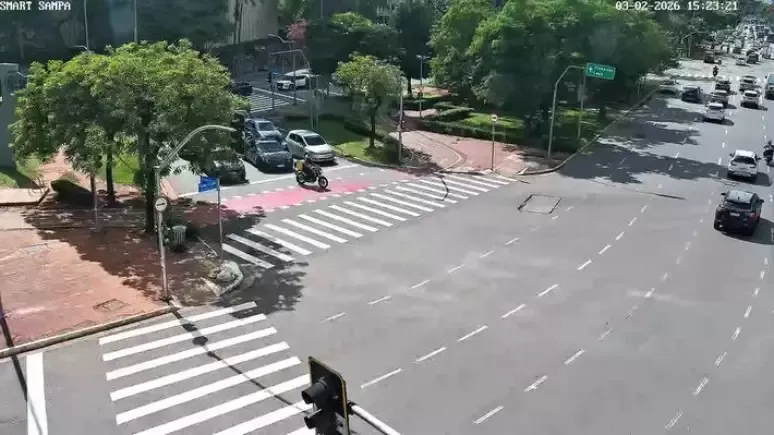

Como o SmartFlow funciona
Três partes trabalham juntas: o cidadão que reporta, a tecnologia que lê o fluxo e a cidade que age.
Do reporte ao semáforo
- O cidadão reporta um ponto onde o semáforo demora ou a fila se repete.
- O fluxo real é medido com as câmeras de monitoramento que a cidade já tem, somadas aos reportes.
- A inteligência artificial sugere o ajuste do tempo do semáforo para aquele cruzamento.
- A cidade acompanha o resultado e volta a ouvir o cidadão, fechando o ciclo.
Quem decide e executa os ajustes é o poder público. O SmartFlow entra com a leitura do fluxo e com a voz de quem usa a via.


Veja o SmartFlow lendo um cruzamento
A imagem é uma gravação de demonstração. Ela não é lida pelo sistema: os números ao lado vêm da simulação logo abaixo, de um cruzamento simplificado. Na solução completa, viriam de câmeras que a cidade já tem.
Leitura do sistema
Vem da simulação abaixo, não do vídeo. Valores ilustrativos.
- Fila no cruzamento simulado
- Verde nesta fase
- ciclo fixo
Ligue o SmartFlow para ver o tempo de verde se ajustar à fila.
Quer ver trânsito de verdade? A CET publica imagens e índices de lentidão no site oficial da CET (abre em nova aba).
Mesmo trânsito, dois semáforos
Este cruzamento é uma simulação simplificada. Os dois recebem os mesmos carros, nos mesmos instantes. A única diferença é como o semáforo decide a hora de trocar. As taxas de chegada e as regras são hipóteses do protótipo, não medições.
Ciclo fixo
Plano fixo ajustado ao movimento médio: 30 s para Norte–Sul e 14 s para Leste–Oeste.
- Em fila
- 0 veículos
- Espera média
- 0 s
- Já passaram
- 0 veículos
- Verde agora
- Norte–Sul
SmartFlow
Troca quando o lado verde esvazia ou o outro acumula fila (de 8 a 40 s).
- Em fila
- 0 veículos
- Espera média
- 0 s
- Já passaram
- 0 veículos
- Verde agora
- Norte–Sul
Deixe rodar pelo menos 60 s para comparar os dois semáforos.
Modelo simplificado. Uma faixa por sentido e sem conversões. Um em cada dez veículos é ônibus: aparece maior, com contorno, ocupa duas vagas, demora mais para sair e conta como três veículos na decisão do SmartFlow. Quando alguém pede para atravessar, o SmartFlow segura o verde por pelo menos 12 s (os pedestres aparecem como pontos brancos). Verde, laranja e vermelho mostram há quanto tempo cada veículo espera. Com muito movimento, a vantagem diminui, porque sobra pouco espaço para ajustar. O percentual mede a espera num único cruzamento do modelo, não o tempo de viagem num corredor, então não é comparável aos números do Simulador.
O que o protótipo faz hoje e o que a solução completa faria
- Simula o efeito do SmartFlow em 13 corredores, com dados ilustrativos.
- Calcula as horas por ano que a pessoa perde no trajeto dela.
- Recebe reportes com validação e guarda no próprio navegador.
- Foi feito com HTML, CSS e JavaScript, sem bibliotecas externas.
- Visão computacional em equipamento local, lendo câmeras que já existem.
- Integração com o controle dos semáforos, em parceria com a CET.
- Prioridade para corredores de ônibus, em conjunto com a SPTrans.
- Painel público com os resultados de cada ajuste.
Quem participa do ecossistema
Cidadãos
Reportam os pontos críticos e dizem se o trânsito melhorou.
CET e prefeitura
Operam os semáforos, validam e aplicam os ajustes.
SPTrans e operadoras de ônibus
Indicam onde o ônibus perde mais tempo e recebem prioridade.
Universidades
Ajudam a medir o antes e o depois com método.
Empresas de tecnologia
Desenvolvem, mantêm e auditam o sistema.
Simples, seguro e inclusivo
Funciona sem estrutura ideal
Depois de aberto, o protótipo roda sem internet e não depende de nenhum serviço externo.
Acessível
Tem navegação por teclado, modo de alto contraste e ajuste do tamanho do texto em todas as páginas.
Dados protegidos
Os reportes ficam só no navegador de quem enviou. A solução completa deve ler o fluxo sem identificar pessoas.
Respeita as diferenças
Textos curtos, mensagens de erro que dizem como corrigir e botões grandes o bastante para o toque.